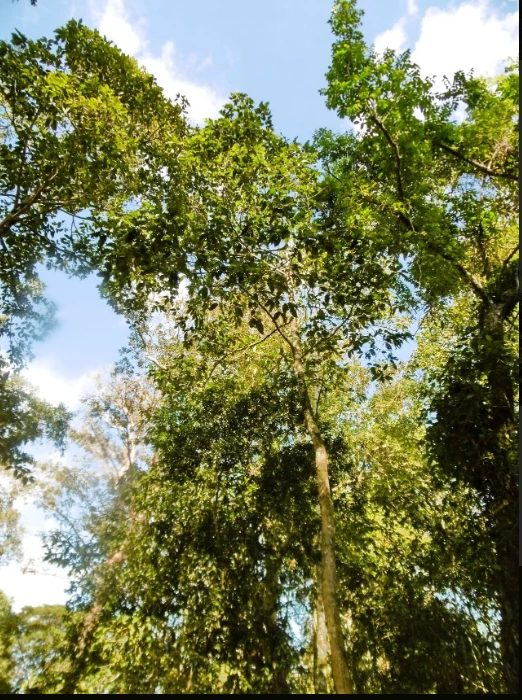
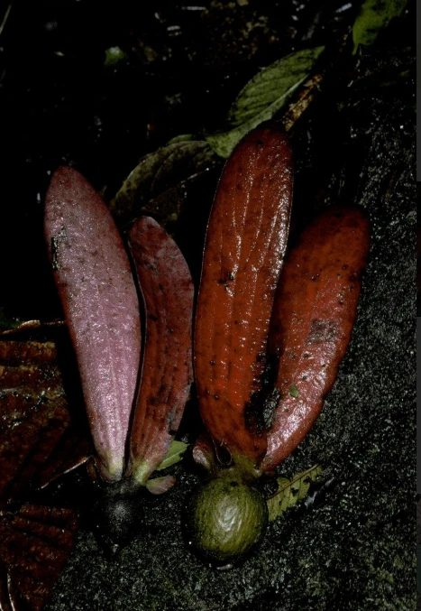
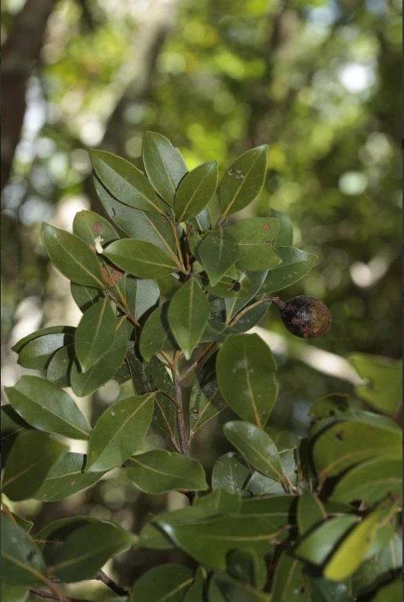

Dipterocarpus alatus
Contributor: Aisha Rahman
Note: Gazing upward into the canopy, where the tall trees spread their branches above the other trees.
Pl@netMatrixKnow it. Name it. Save it.
These cards feature images of plants contributed by the members of the iNaturalist and Pl@ntNet communities. Each one contains the name of the person who shared it, the plant's name and a bit about what is in the photo. All pictures have been checked and the plant's name verified.

Contributor: Aisha Rahman
Note: Gazing upward into the canopy, where the tall trees spread their branches above the other trees.

Contributor: Daniel Lim
Note: Winged fruits that have just fallen. The wings help slow the descent of the seed and allow the wind to transport the seed.

Contributor: Sofia Martinez
Note: Among rounded slightly wavy leaves, an old, twisted branch.

Contributor: Kwame Mensah
Note: A smooth, hairless, dry season leaf which changed colour.

Contributor: Hana Takahashi
Note: Ripening fruit which resembles a small avocado.

Contributor: Arjun Nair
Note: One large leaf viewed from below, edges turning orange before the leaf falls.

Contributor: Chloe Bennett
Note: Two dried fruits each with the two long wings characteristic of the family.

Contributor: Farid Hakim
Note: A single dark ripe fruit among grey-green leaves in shady forest.

Contributor: Elena Rossi
Note: This is a young seedling with a bronze new shoot that is being propagated to help bring back this endangered tree.
| Plant family | Photos | Plants shown |
|---|---|---|
| Dipterocarpaceae | 5 | Dipterocarpus alatus, Dipterocarpus tuberculatus, Monotes glaber, family fruits |
| Lauraceae | 4 | Cryptocarya alba, Cryptocarya adpressa, Beilschmiedia costaricensis, Beilschmiedia berteroana |
Got a photo of your own? Send us images of your plants.